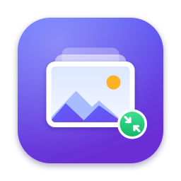

Build a recipe once, convert a whole folder. Stack steps — Filter, Resize, Compress to Size, Watermark, Rename — then convert PNG and JPEG images to WebP, PNG, or JPEG in one run. Everything happens locally on your Mac.
Next to the originals by default. In the “Output” step you can choose a subfolder next to the originals or any folder you pick, and what to do when a file with the same name already exists.
macOS sandboxing lets an app write only where you allow it. When you add single images rather than a folder, the app asks once for permission to save into the folder that contains them. You can also save to a folder you choose instead.
Small files keep their size, narrow images try a higher quality first, and everything else steps down through a list of widths until the file — watermark included — fits under your size limit.
Pick one of the nine positions in the “Watermark” step, or drag the watermark directly in the preview. Its distance to the edges is kept proportional, so it lands in the same place on images of any size.
After a file converts successfully, its original is moved to the Trash, not erased, so you can still put it back.
The app follows your Mac’s language. To use a different one for this app only, choose Settings… (⌘,) › Language, then restart the app.
Every feature is free to try for 7 days. After that, adding images, editing steps, and previewing keep working; “Run” needs the one-time “Permanent Unlock” purchase. Purchases are handled by Apple. On a new Mac or after reinstalling, choose “Restore Purchases” in Trial & Purchase… or in Settings.
Email 827868421@qq.com. Please include your macOS version and, if possible, a sample image.
配好一次步骤，整个文件夹一键处理。 把「筛选文件」「调整尺寸」「阶梯压缩」「添加水印」「重命名」等步骤串成流水线，一次把 PNG、JPEG 转成 WebP、PNG 或 JPEG。全部在你的 Mac 本地完成。
默认保存在原图旁边。在「输出」步骤里可以改为原图旁的子文件夹或任意指定文件夹，也可以设置遇到同名文件时的处理方式。
macOS 沙盒只允许 App 写入你授权的位置。如果你添加的是单张图片而不是文件夹，App 会请求一次原图所在文件夹的写入权限；你也可以改为保存到自己选择的文件夹。
小文件保持原尺寸；较窄的图片先尝试更高画质；其余图片按宽度阶梯逐档缩小，直到加完水印后的最终文件小于你设定的体积上限。
在「添加水印」步骤里选择九宫格中的一个位置，或直接在预览图上拖动水印。到边缘的距离按比例保持，不同尺寸的图片上位置一致。
文件转换成功后，原图会被移到废纸篓，而不是直接抹掉，需要时还可以放回原处。
App 默认跟随 Mac 的系统语言。如果只想让这个 App 换成别的语言，请在「设置…」（⌘,）›「语言」中选择，然后重新启动 App。
所有功能可免费试用 7 天。试用结束后，添加图片、编辑步骤和预览仍可使用；「运行」批量导出需要一次性购买「永久解锁」。购买由 Apple 处理。换新 Mac 或重新安装后，可在「试用与购买…」或「设置」里点「恢复购买」。
请发送邮件至 827868421@qq.com，并尽量附上 macOS 版本和示例图片。
設定一次步驟，整個資料夾一鍵處理。 把「篩選檔案」「調整尺寸」「階梯壓縮」「加入浮水印」「重新命名」等步驟串成流程，一次把 PNG、JPEG 轉成 WebP、PNG 或 JPEG。全部在你的 Mac 本機完成。
預設儲存在原圖旁邊。在「輸出」步驟中可改為原圖旁的子資料夾或任何指定資料夾，也可以設定遇到同名檔案時的處理方式。
macOS 沙盒只允許 App 寫入你授權的位置。如果你加入的是單張圖片而不是資料夾，App 會請求一次原圖所在資料夾的寫入權限；你也可以改為儲存到自己選擇的資料夾。
小檔案保持原尺寸；較窄的圖片先嘗試較高畫質；其餘圖片依寬度階梯逐檔縮小，直到加上浮水印後的最終檔案小於你設定的上限。
在「加入浮水印」步驟中選擇九宮格的一個位置，或直接在預覽圖上拖動浮水印。到邊緣的距離會按比例保持，不同尺寸的圖片上位置一致。
檔案轉換成功後，原圖會移到垃圾桶，而不是直接抹除，需要時還能放回原處。
App 預設跟隨 Mac 的系統語言。若只想讓這個 App 改用其他語言，請在「設定⋯」（⌘,）›「語言」中選擇，然後重新啟動 App。
所有功能可免費試用 7 天。試用結束後，加入圖片、編輯步驟和預覽仍可使用；「執行」批次匯出需要一次性購買「永久解鎖」。購買由 Apple 處理。換新 Mac 或重新安裝後，可在「試用與購買⋯」或「設定」中點「恢復購買」。
請寄信至 827868421@qq.com，並盡量附上 macOS 版本與範例圖片。
一度レシピを作れば、フォルダ全体を一括変換。 「絞り込み」「サイズ変更」「段階圧縮」「透かし」「名前変更」などのステップを組み合わせ、PNG と JPEG を WebP・PNG・JPEG に一度で変換します。処理はすべてお使いの Mac 上で行われます。
初期設定では元の画像と同じ場所です。「出力」ステップで、元の画像の横のサブフォルダや任意のフォルダを選べます。同じ名前のファイルがある場合の扱いも設定できます。
macOS のサンドボックスでは、App は許可された場所にしか書き込めません。フォルダではなく画像を個別に追加した場合、その画像があるフォルダへの保存許可を一度だけ求めます。任意のフォルダに保存するよう設定することもできます。
小さいファイルはそのままのサイズ、幅の狭い画像はまず高画質を試し、それ以外は透かしを含めた最終ファイルが上限サイズに収まるまで、幅を段階的に小さくします。
「透かし」ステップで 9 つの位置から選ぶか、プレビュー上で透かしを直接ドラッグします。端からの距離は比率で保たれるので、どのサイズの画像でも同じ位置に入ります。
変換に成功したファイルの元画像は完全に消されるのではなくゴミ箱に移動するので、必要なら元に戻せます。
App は Mac の言語設定に従います。この App だけ別の言語にしたい場合は、「設定…」（⌘,）›「言語」で選び、App を再起動してください。
すべての機能を 7 日間無料でお試しいただけます。試用終了後も画像の追加、ステップの編集、プレビューは使えます。「実行」には 1 回限りの購入「永久ライセンス」が必要です。購入は Apple が処理します。新しい Mac や再インストール後は、「試用と購入…」または設定で「購入を復元」を選んでください。
827868421@qq.com までメールでお寄せください。macOS のバージョンと、可能であればサンプル画像を添えていただけると助かります。
레시피를 한 번 만들면 폴더 전체를 한 번에 변환합니다. ‘필터’, ‘크기 조정’, ‘단계별 압축’, ‘워터마크’, ‘이름 변경’ 같은 단계를 쌓아 PNG와 JPEG 이미지를 WebP, PNG, JPEG로 한 번에 변환하세요. 모든 처리는 Mac에서 이루어집니다.
기본적으로 원본 옆에 저장됩니다. ‘출력’ 단계에서 원본 옆의 하위 폴더나 원하는 폴더를 고를 수 있고, 같은 이름의 파일이 있을 때의 처리 방식도 정할 수 있습니다.
macOS 샌드박스에서는 앱이 허용된 위치에만 쓸 수 있습니다. 폴더가 아니라 이미지를 하나씩 추가하면, 그 이미지가 있는 폴더에 저장할 권한을 한 번만 요청합니다. 원하는 폴더에 저장하도록 바꿀 수도 있습니다.
작은 파일은 크기를 유지하고, 폭이 좁은 이미지는 먼저 높은 품질을 시도하며, 나머지는 워터마크를 포함한 최종 파일이 용량 한도 안에 들어올 때까지 너비를 단계적으로 줄입니다.
‘워터마크’ 단계에서 9개 위치 중 하나를 고르거나 미리보기에서 워터마크를 직접 드래그하세요. 가장자리와의 거리가 비율로 유지되어 어떤 크기의 이미지에서도 같은 위치에 놓입니다.
변환에 성공한 파일의 원본은 완전히 지워지지 않고 휴지통으로 이동하므로 필요하면 되살릴 수 있습니다.
앱은 Mac의 언어를 따릅니다. 이 앱만 다른 언어로 쓰려면 ‘설정…’(⌘,) › ‘언어’에서 고른 뒤 앱을 다시 시작하세요.
모든 기능을 7일간 무료로 사용해 볼 수 있습니다. 체험이 끝나도 이미지 추가, 단계 편집, 미리보기는 계속 쓸 수 있으며, ‘실행’에는 한 번만 구매하는 ‘영구 잠금 해제’가 필요합니다. 구매는 Apple이 처리합니다. 새 Mac이나 재설치 후에는 ‘체험 및 구매…’ 또는 설정에서 ‘구매 복원’을 선택하세요.
827868421@qq.com로 이메일을 보내 주세요. macOS 버전과 가능하다면 예시 이미지를 함께 보내 주시면 좋습니다.
Créez une recette une fois, convertissez tout un dossier. Enchaînez des étapes — Filtrer, Redimensionner, Compression par paliers, Filigrane, Renommer — puis convertissez vos images PNG et JPEG en WebP, PNG ou JPEG en une seule fois. Tout se passe sur votre Mac.
Par défaut, à côté des originaux. Dans l’étape « Sortie », vous pouvez choisir un sous-dossier à côté des originaux ou n’importe quel dossier, et ce qu’il faut faire si un fichier du même nom existe déjà.
Le bac à sable de macOS ne permet à une app d’écrire que là où vous l’autorisez. Si vous ajoutez des images isolées plutôt qu’un dossier, l’app demande une seule fois l’accès au dossier qui les contient. Vous pouvez aussi enregistrer dans un dossier de votre choix.
Les petits fichiers gardent leur taille, les images étroites essaient d’abord une qualité plus élevée, et les autres descendent une liste de largeurs jusqu’à ce que le fichier final — filigrane compris — tienne sous votre limite.
Choisissez l’une des neuf positions dans l’étape « Filigrane », ou faites glisser le filigrane directement dans l’aperçu. Sa distance aux bords reste proportionnelle : il tombe au même endroit quelle que soit la taille de l’image.
Une fois un fichier converti avec succès, son original est placé dans la corbeille, pas effacé : vous pouvez toujours le récupérer.
L’app suit la langue de votre Mac. Pour utiliser une autre langue dans cette app seulement, choisissez Réglages… (⌘,) › Langue, puis redémarrez l’app.
Toutes les fonctions sont gratuites pendant 7 jours. Ensuite, l’ajout d’images, la modification des étapes et l’aperçu restent disponibles ; « Exécuter » nécessite l’achat unique « Déverrouillage permanent ». Les achats sont gérés par Apple. Sur un nouveau Mac ou après une réinstallation, choisissez « Restaurer les achats » dans Essai et achat… ou dans les Réglages.
Écrivez à 827868421@qq.com. Indiquez si possible votre version de macOS et joignez une image d’exemple.
Einmal ein Rezept erstellen, einen ganzen Ordner umwandeln. Kombinieren Sie Schritte – Filtern, Skalieren, Stufenweise komprimieren, Wasserzeichen, Umbenennen – und wandeln Sie PNG- und JPEG-Bilder in einem Durchgang in WebP, PNG oder JPEG um. Alles geschieht lokal auf Ihrem Mac.
Standardmäßig neben den Originalen. Im Schritt „Ausgabe“ können Sie einen Unterordner neben den Originalen oder einen beliebigen Ordner wählen und festlegen, was bei einer gleichnamigen Datei passiert.
Die Sandbox von macOS erlaubt einer App nur dort zu schreiben, wo Sie es zulassen. Wenn Sie einzelne Bilder statt eines Ordners hinzufügen, fragt die App einmalig nach Zugriff auf den Ordner, in dem sie liegen. Sie können stattdessen auch in einen Ordner Ihrer Wahl speichern.
Kleine Dateien behalten ihre Größe, schmale Bilder versuchen zuerst eine höhere Qualität, und alle anderen werden schrittweise über eine Breitenliste verkleinert, bis die fertige Datei – inklusive Wasserzeichen – unter Ihrem Limit liegt.
Wählen Sie im Schritt „Wasserzeichen“ eine der neun Positionen oder ziehen Sie das Wasserzeichen direkt in der Vorschau. Der Abstand zu den Rändern bleibt proportional, sodass es auf Bildern jeder Größe an derselben Stelle sitzt.
Nach einer erfolgreichen Umwandlung wird das Original in den Papierkorb gelegt, nicht endgültig gelöscht – Sie können es also wiederherstellen.
Die App folgt der Sprache Ihres Mac. Um nur für diese App eine andere Sprache zu verwenden, wählen Sie Einstellungen … (⌘,) › Sprache und starten die App neu.
Alle Funktionen sind 7 Tage kostenlos testbar. Danach funktionieren Bilder hinzufügen, Schritte bearbeiten und die Vorschau weiterhin; „Ausführen“ erfordert den einmaligen Kauf „Dauerhaft freischalten“. Käufe werden von Apple abgewickelt. Auf einem neuen Mac oder nach einer Neuinstallation wählen Sie „Käufe wiederherstellen“ unter Test & Kauf … oder in den Einstellungen.
Schreiben Sie an 827868421@qq.com. Geben Sie bitte Ihre macOS-Version an und fügen Sie nach Möglichkeit ein Beispielbild bei.
Crea una receta una vez y convierte una carpeta entera. Combina pasos —Filtrar, Redimensionar, Compresión por pasos, Marca de agua, Renombrar— y convierte imágenes PNG y JPEG a WebP, PNG o JPEG de una sola vez. Todo ocurre en tu Mac.
Por omisión, junto a los originales. En el paso «Salida» puedes elegir una subcarpeta junto a los originales o cualquier carpeta, y qué hacer si ya existe un archivo con el mismo nombre.
El aislamiento de macOS solo deja que una app escriba donde tú lo permitas. Si añades imágenes sueltas en lugar de una carpeta, la app pide una vez permiso para guardar en la carpeta que las contiene. También puedes guardar en una carpeta que elijas.
Los archivos pequeños mantienen su tamaño, las imágenes estrechas prueban primero una calidad más alta y el resto baja por una lista de anchos hasta que el archivo final —con la marca de agua incluida— queda por debajo de tu límite.
Elige una de las nueve posiciones en el paso «Marca de agua» o arrastra la marca directamente en la vista previa. Su distancia a los bordes se mantiene proporcional, así que queda en el mismo sitio en imágenes de cualquier tamaño.
Cuando un archivo se convierte correctamente, su original va a la papelera en lugar de borrarse, así que aún puedes recuperarlo.
La app sigue el idioma de tu Mac. Para usar otro solo en esta app, elige Ajustes… (⌘,) › Idioma y reinicia la app.
Puedes probar todas las funciones gratis durante 7 días. Después, añadir imágenes, editar pasos y la vista previa siguen funcionando; «Ejecutar» requiere la compra única «Desbloqueo permanente». Apple gestiona las compras. En un Mac nuevo o tras reinstalar, elige «Restaurar compras» en Prueba y compra… o en Ajustes.
Escribe a 827868421@qq.com. Indica tu versión de macOS y, si puedes, adjunta una imagen de ejemplo.
Настройте рецепт один раз — обработайте всю папку. Соберите шаги — «Фильтр», «Размер», «Пошаговое сжатие», «Водяной знак», «Переименование» — и за один запуск преобразуйте изображения PNG и JPEG в WebP, PNG или JPEG. Всё происходит локально на вашем Mac.
По умолчанию — рядом с оригиналами. В шаге «Вывод» можно выбрать подпапку рядом с оригиналами или любую папку, а также что делать, если файл с таким именем уже есть.
Песочница macOS разрешает приложению записывать только туда, куда вы позволили. Если вы добавляете отдельные изображения, а не папку, приложение один раз попросит доступ к папке, где они лежат. Можно также сохранять в выбранную вами папку.
Маленькие файлы сохраняют размер, узкие изображения сначала пробуют более высокое качество, а остальные поэтапно уменьшаются по списку ширин, пока итоговый файл — вместе с водяным знаком — не уложится в заданный лимит.
Выберите одну из девяти позиций в шаге «Водяной знак» или перетащите знак прямо в предпросмотре. Расстояние до краёв сохраняется пропорционально, поэтому на изображениях любого размера знак окажется в том же месте.
После успешного преобразования оригинал перемещается в Корзину, а не стирается, так что его можно вернуть.
Приложение использует язык вашего Mac. Чтобы выбрать другой язык только для него, откройте «Настройки…» (⌘,) › «Язык» и перезапустите приложение.
Все функции можно бесплатно попробовать в течение 7 дней. После этого добавление изображений, редактирование шагов и предпросмотр продолжают работать, а для «Запустить» нужна разовая покупка «Бессрочная разблокировка». Покупки обрабатывает Apple. На новом Mac или после переустановки выберите «Восстановить покупки» в окне «Пробный период и покупка…» или в настройках.
Пишите на 827868421@qq.com. Укажите, пожалуйста, версию macOS и по возможности приложите пример изображения.
Crea una ricetta una volta, converti un’intera cartella. Combina passaggi — Filtra, Ridimensiona, Compressione a gradini, Filigrana, Rinomina — e converti immagini PNG e JPEG in WebP, PNG o JPEG in un’unica esecuzione. Tutto avviene sul tuo Mac.
Per impostazione predefinita accanto agli originali. Nel passaggio «Output» puoi scegliere una sottocartella accanto agli originali o una cartella qualsiasi, e cosa fare se esiste già un file con lo stesso nome.
La sandbox di macOS consente a un’app di scrivere solo dove lo permetti tu. Se aggiungi singole immagini invece di una cartella, l’app chiede una sola volta il permesso di salvare nella cartella che le contiene. Puoi anche salvare in una cartella a tua scelta.
I file piccoli mantengono le dimensioni, le immagini strette provano prima una qualità più alta e tutte le altre scendono lungo un elenco di larghezze finché il file finale — filigrana inclusa — non rientra nel limite.
Scegli una delle nove posizioni nel passaggio «Filigrana» oppure trascina la filigrana direttamente nell’anteprima. La distanza dai bordi resta proporzionale, quindi finisce nello stesso punto su immagini di qualsiasi dimensione.
Dopo una conversione riuscita, l’originale viene spostato nel Cestino, non cancellato: puoi ancora recuperarlo.
L’app segue la lingua del Mac. Per usarne un’altra solo in questa app, scegli Impostazioni… (⌘,) › Lingua, poi riavvia l’app.
Tutte le funzioni sono gratuite per 7 giorni. Dopo la prova, aggiungere immagini, modificare i passaggi e l’anteprima continuano a funzionare; «Esegui» richiede l’acquisto unico «Sblocco permanente». Gli acquisti sono gestiti da Apple. Su un nuovo Mac o dopo una reinstallazione, scegli «Ripristina acquisti» in Prova e acquisto… o nelle Impostazioni.
Scrivi a 827868421@qq.com. Indica la versione di macOS e, se possibile, allega un’immagine di esempio.